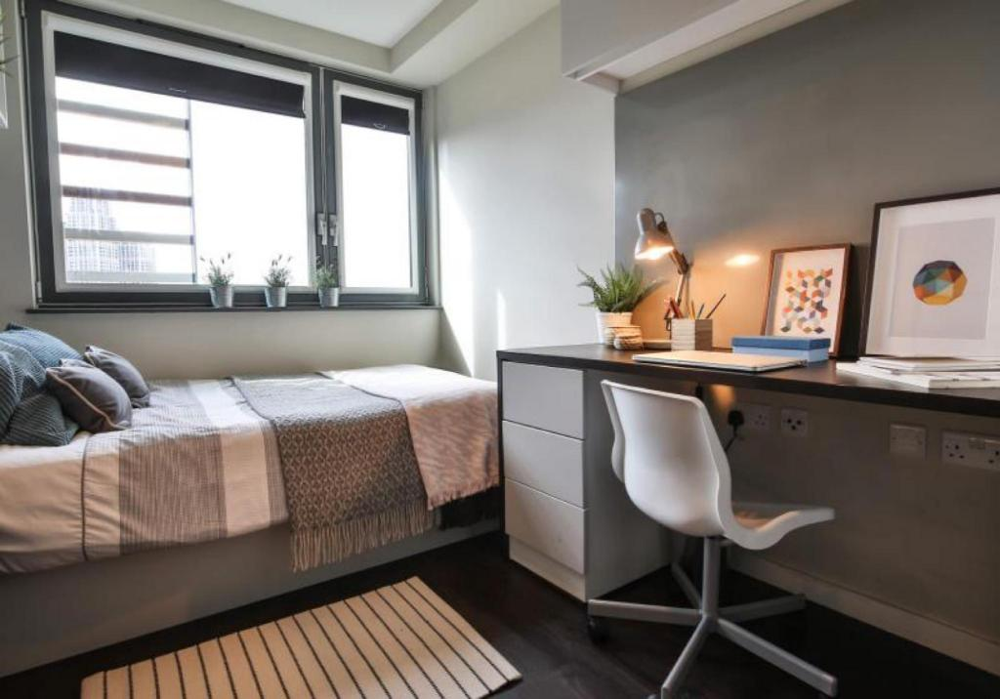
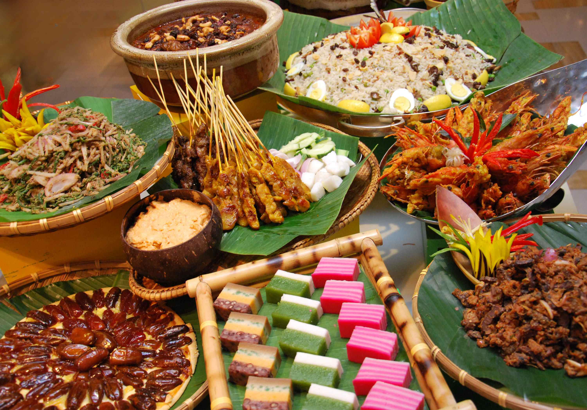
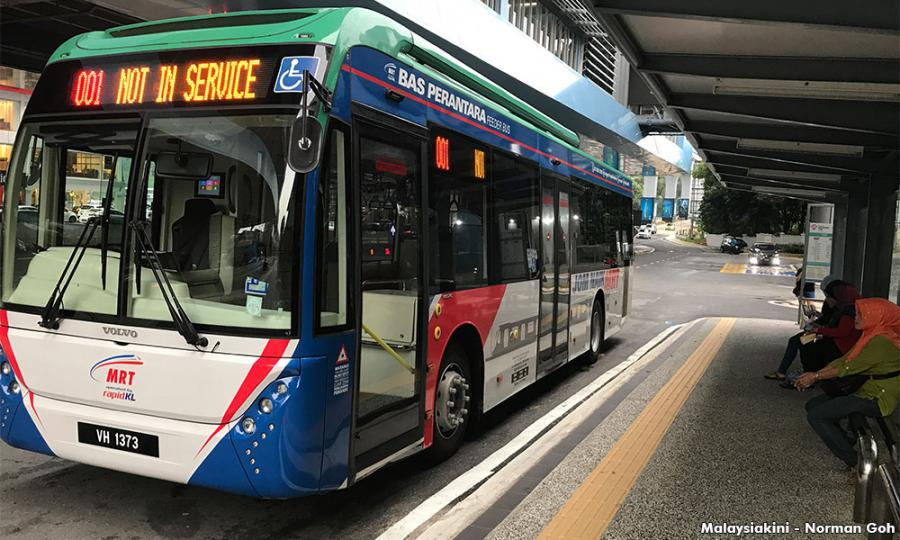

Student Life in Malaysia

Being a university student can be students’ most exciting adventures in life. Attending higher educations comes with many benefits such as promotes the development of new ideas, promotes mental and intellectual growth, improves social skills through co-curricular activities and builds long-lasting friendships. Here in Malaysia, students will experience a good and well-balanced student life that not only will be beneficial to them in their future, but also will be an unforgettable experience that they will surely treasure.
Visa & Arrival (for international students)
For international students, the Malaysian visa requirements and procedures are not difficult. For the first phase, students need to provide a valid passport, photo, academic records, IELTS/TOEFL certificate, offer letter from the university, filled-out visa application form, as well as medical examination forms which are done in the student’s country of origin. The approval process will take less than a month and the letter will be received in digital format. Later, students can start planning to travel to Malaysia. At the airport, the printed version of the approval letter should be shown to the officer at the immigration counter. A temporary pass which is valid for 2 weeks will be stamped in the student’s passport. Students should seek help from their university’s international office to continue with the visa application process during these 2 weeks. Students are also required to carry out medical examinations in certain hospitals.
Fees & Tuition
Malaysia offers a wide selection of courses to study that fits a wide range of budgets. Studying at a private university tends to be far less expensive with a range of USD 8,600 ' to USD 11,400 for a 3-year business degree and a range of USD 62,900 to USD 108,600 for Medicine over 3 years. In contrast, the price range for a 3-year business degree at a foreign university campus would be around USD 13,700 to USD 24,000. For a medical degree, the fees would be about USD 114,300 over 5 years. These figures vary according to the university and change on a annual basis. Visiting the website of the university will provide more insight into the costs.
Accommodation
The price for accommodation in Malaysia is rather fair. For on-campus accommodation, students can choose from different room or unit types. For example, at Monash University, students had two options. In type one, they have the chance of living alone while paying a higher price. Each room has an individual washroom as well as a cooking area. The second type have a lower price with 8 students living in one unit (each person living in a separate room). The washrooms were shared and a cooking area is provided. These accommodations tend to cost between USD 100 – 250 a month. Off-campus accommodation provides a wider range of living options at a slightly higher price. In Kuala Lumpur, townhouses are rented to groups of students who would split the total cost. Rooms may also be individually rented out. These townhouses usually share a kitchen and common area. Students also have the option to live in hostels, where there are dorms or shared rooms at a lower price. Utilities are not included in off-campus rentals but can be negotiated with the landlord. Students can expect to pay around USD 150 and above per month, with an additional USD 30-50 for utilities.
Food
There are many ethnic groups living in Malaysia which consists mainly of Malays, Chinese and Indians. As a result, the food is extremely diverse as well. Foods and delicacies such as Nasi Lemak, Curry Laksa, Fried Rice, Nasi Briyani, Roti Canai, Maggi Goreng, and Satay are the favorites among both local and foreign students. Students also enjoy desserts such as Kaya Pau, Rojak or Kuih. Most universities provide students with a shared kitchen where light meals are prepared. Besides the option of cooking, KL is full of stalls, restaurants and food courts where students can purchase their daily meals at a very low cost. The monthly budget for groceries would be about USD 100 per month.
Textbooks
In some universities, students may be required to purchase textbooks for their studies. Students can often get discounts by purchasing from publishers or buying second-hand textbooks from upperclassmen. These will often be listed on student forums or social media groups. Some textbooks may sometimes be found in the library of universities which are available for loan at no additional cost.
Student savings and discounts
Students in Malaysia can enjoy lots of discounts by simply showing your student ID which saves a lot. One of them would be purchasing flights. Many airlines will provide passengers with a study visa extra luggage allowance at no additional cost. Besides, stores in the city will provide student discounts on certain weekdays upon showing your student ID. Cinemas will also provide student discounts for shows started before 6:00 p.m. on weekdays (excluding public holidays). Major bookstores in Malaysia have discount programs for students too. Every year, the Big Bad Wolf Sale, a massive book sale held in Kuala Lumpur allows everyone to make a huge saving on their reading habits.
Part-time work

The immigration regulations in Malaysia allows international students to work for a maximum of 20 hours a week during semester breaks only. This needs to be subject to the approval of the immigration department. An application must be made through the university's international student office, where the student will be asked to produce documents and attend an interview. Students are only allowed to work in restaurants, petrol stations, mini-marts or hotels.
Leisure activities
For leisure activities, gyms tend to offer student discounts while universities often have their own sports facilities that can be accessed for free. Students are allowed to form clubs and societies based on their hobbies, interests and culture in universities. These societies are a great way to make friends and have a vibrant non-academic life at university. In the shopping malls, entertainments such as arcade, archery range, darts, billiard hall, bowling centre, and theme park can be found. Berjaya Times Square Mall and its Theme Park, Sunway Pyramid and Sunway Lagoon Theme Park, and Suria KLCC and KLCC Park are of the most popular ones that students can enjoy. As Kuala Lumpur has become a popular student destination, students from different universities have organized various tournaments and competitions. Students represent various universities would compete against each other, providing a way for students to build a community during their time in the city. The nightlife in Kuala Lumpur is one of the most exciting activities around. University campuses in Malaysia are dry areas where no alcohol is permitted. Thus, students tend to hang out at clubs and bars to let off some steam. Many student communities will also host student parties on a regular basis, where drinks and transport are discounted. There are also many tourist destinations here in Malaysia that students can explore. The popular ones include Petronas Towers, Menara KL Tower, Chinatown, Batu Caves, Kuala Lumpur City Gallery, Thean Hou Temple, National Zoo, KL Bird Park, KL Butterfly Park, Aquaria KLCC, Genting Highlands, and Strawberry Farm. Students can explore and have a great time at these destinations while taking a break from their studies. Students studying in Kuala Lumpur are accessible to the highly affordable travel opportunities in South East Asia. Discounted airfares and group trips make for memorable experiences that really enrich the student experience in Kuala Lumpur.
Transport
Many universities tend to provide shuttles that have designated stops for students to travel. In order to use public transport to avoid the notorious traffic jams, students tend to invest in a public transport card called TouchNGo. Public transport is cheap here which costs a fraction of a dollar per journey. The wide network of public transport here also covers most of the city and suburbs. Ride-share services has also improved the options when it comes to commuting in Kuala Lumpur. Many rideshares provides discount codes and bonuses for frequent users.